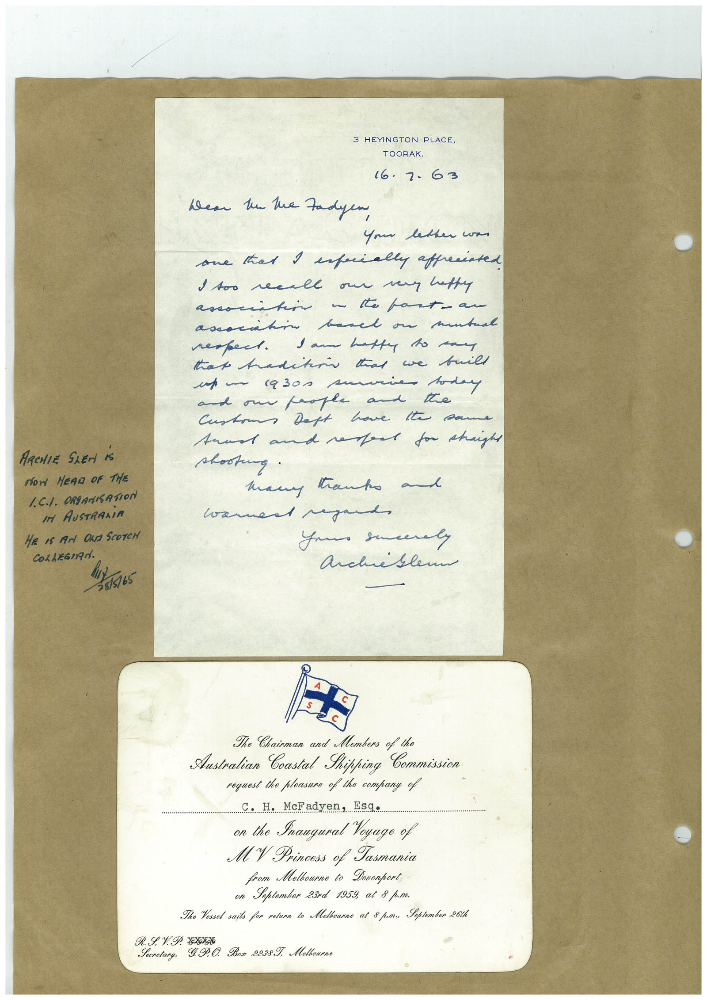

Book 1 · scan 013


Description
Transcription
Context
Review notes
Compare the machine draft with the scan. Handwriting and names need human review.
Artifacts
Edit the artifacts field in this note’s frontmatter to change these records. This summary is generated.
B01-S013-A01 — Invitation & Handwritten note — Book 1, scan 013
Types: Invitation, Handwritten note
Scope: Whole scanned page; individual items can be split out during review.
Caption: Not mapped yet.
Caption source: Not recorded yet.
Caption status: unmapped
Machine transcription
3 HEYINGTON PLACE, TOORAK. 16.7.63 Wear he lue Fadyen Your letter won one tat I especially apprenated I too recall our very luffy associtin a to part- an assocatin basel on mutual sam hat to man ARCHIE SLEN IS How HEAR OF THE 1.C./. ORGANISATION IM AUSTRARiA HE IS FArI ONTA SCOTCH COLLEGIAN. 28/5/65 shooting. many tanks al warned regard, Your sucerly Archiblem Secretary, The Chairman and Members of the Australian Coastal Shipping Commission request the pleasure of the company of C. H. McFadyen, Esq. on the Inaugural Yoyage of MY Princess of Tasmania from Melbourne to Devonport on September 23rd 1959, at 8 p.m. The Yessel sails for return to Melbourne at 8 p.m., Soptember 26th 9 P. O. Box 2238 J. Molbourne